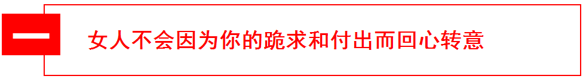
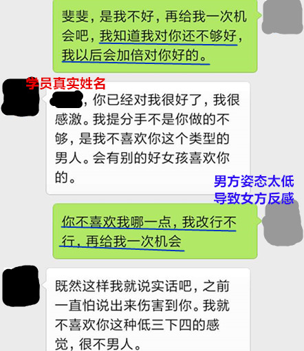
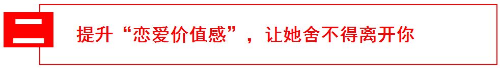
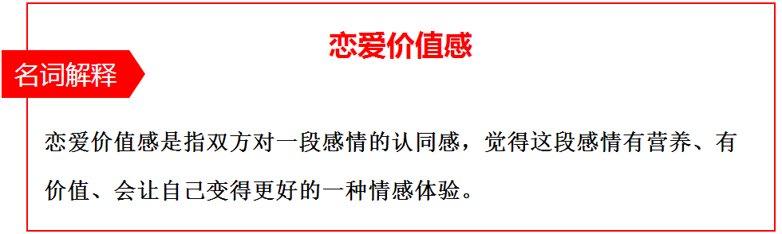

官方二维码
免费情感热线电话
4006-299-520

官方二维码
免费情感热线电话
4006-299-520

你对她嘘寒问暖，每天送她上下班；你对她有求必应，凡是想要的，都能买回来；家务你一手包，从厨房到厕所完全不用她动手……你对她这么好，为什么她还要离开你？是你付出的还不够吗？你需要对她更加好才能挽回她吗？
你的思维进入了一个误区。当你的付出已经达到了对方感情需求的时候，分手的原因就不是你付出够不够的问题了，这时候你要从自身找找原因。
学员林平（化名）和她女朋友是大学同学，林平追求了两年变成情侣关系。林平很感激对方选择自己，所以对她百依百顺，有求必应，姿态极低。在相处的过程中，女方看不起林平姿态太低而提出了分手，而林平却以为是自己对她还不够好，各种跪求挽留，道歉送礼物表心意，这不但没有挽回对方，还让对方更加看他不起。
林平的问题在于把自己的姿态放的太低。因为追求不易，所以太过于珍惜，把对方当女神一样放在一个高高在上的位置，去跪舔，去仰望，去付出。这种奉献累不累？很累！但对方不见得就会感激。最终林平因为对方看不起他的低姿态而分手。
分手之后，林平没有意识到对方提出分手是因为自己姿态太低的原因，而是误以为自己对对方不够好，所以加倍的去对对方好，去送礼物，去道歉表衷心，去跪求挽留，这种做法让林平的姿态更低，于是更加被对方看不起。他的跪求和付出并没有让女方回心转意。
当女人离开你的理由是觉得你姿态太低时，她不会因为你的跪求和付出而回心转意的。你的跪求和付出对她来说，更是证明了自己选择分手的正确性。既然她看不起你的姿态低，你用更低的姿态去挽回她，有用吗？
这时候你要把你的框架建立起来，你是个男人，是有自尊心的，凭什么低三下四。再喜欢她，也不要伤害到你身为男人的尊严，你自己都不尊重你自己，她怎么会尊重你？在挽回中，保持住自己的框架和姿态，运用适当的方法手段，而不是一味的跪舔哀求，摇尾乞怜。你变得有框架和姿态，会让她刮目相看。
稳定的感情需需要双方的感情投入处于一个平等的状态，也就是说双方要付出一样多的感情。因为你的低姿态，你们双方的关系是处于一个失衡状态的。你付出的太多，而她付出的太少，这种失衡让她不重视你们的感情，最终导致分手。
在挽回过程中，继续对对方付出是十分错误的方法，会让双方的投入更加不平衡，这样怎么可能挽回感情。停止你的付出，用其他方式引导对方对你付出，拉回失衡的关系，才能挽回你们的感情。
学员徐立（化名）和女朋友交往三年了，三年来，两个人的感情很稳定，没有什么浪漫激情，也没有大吵大闹。徐立很满意这样平淡如流水一样的生活，柴米油盐，简单幸福。在他向女朋友提出结婚请求的时候，他的女朋友拒绝了他，并跟他提了分手。原因是受够了这种枯燥无味的生活，受够了徐立温吞无聊的性格。
徐立是典型的无趣老实人，相处起来温和无害，但也很无趣无聊。女人开始的时候会被他们的温和所吸引，觉得他们稳重踏实，但日日相处之后，就感到单调无趣起来。徐立的女朋友并不是一个坏女人，在这三年里，天天重复着一样平淡无聊的生活，面对着一个老实无趣的人，实在是一种折磨。
他们的分手绝不是女方一时的心血来潮，而是思考许久。之前迟迟不提分手的理由是不知道怎么去提，毕竟徐立是个善良的老实人，伤害这样一个老实人，她会有负罪感。但当徐立有了婚姻预期之后，她感觉到了危机，不想让自己的后半生都这样过下去，才提出了分手。她对这段感情没有留恋，因为这段感情完全没有“恋爱价值感”。
培养自己的兴趣爱好，丰富自己的日常生活，让自己活得越来越精彩。一个兴趣爱好广泛，生活精彩的男人，是十分具有吸引力的。当你的女朋友发现你是一个有价值感的男人时，她的眼睛会离不开你，她会对你们未来的婚姻生活有一个美好的预期，选择了你就是选择跟你一样精彩的生活。她还舍得离开你吗？
不要把枯燥无味当成平淡幸福。平淡幸福的生活就好像是日常生活里的柴米油盐，虽然朴实无华，但个中自有一番滋味。而枯燥无味的生活就是日复一日的无聊，消磨人的意志。在日常生活里，偶尔要增加惊喜与情趣。大到旅行露营，小到散步看电影，都是你们生活中的情趣，这些小惊喜穿插在日常生活里，会让她对你们的生活充满期待。